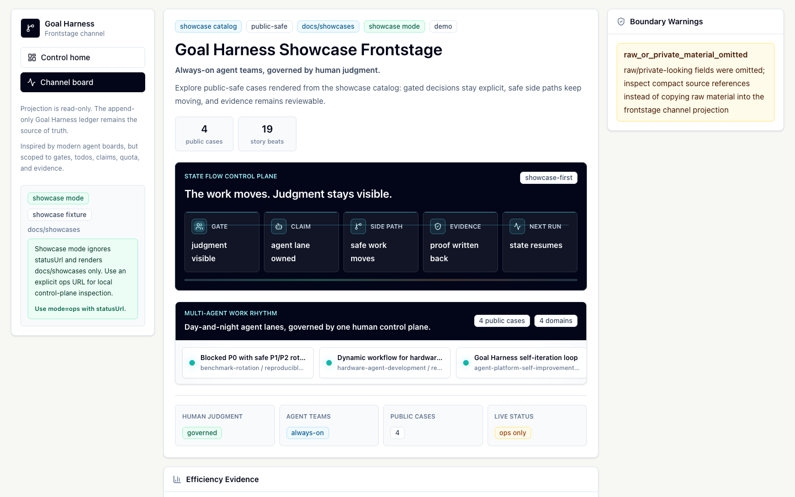

LoopX Showcases¶
This directory collects public-safe examples that explain where LoopX helps and how the behavior can be reproduced or visualized.
Showcases are not raw run logs. Each case should reduce a real collaboration into a reusable control-plane pattern:
- the situation before LoopX was useful;
- the LoopX behavior that changed the work loop;
- the user-facing value in plain language;
- the evidence boundary, including what must stay private;
- a reproducible demo or the reason a demo is still pending;
- optional data that a future website can render as a public evidence sequence.
The machine-readable catalog lives in showcase-catalog.json. Public docs and future frontend surfaces should consume that file instead of scraping prose. The first frontend surface contract lives in frontend-surface.md. Seed-user feedback and case candidates should follow the PoC feedback and case report loop before they become catalog entries or Frontstage cards.
The first static visual asset is the public-safe
control-plane board, which shows a user
gate staying visible while a scoped side path continues through claimed todo,
quota guard, run history, and evidence writeback.
The first creator-operator storyboard is
creator-ops-fake-data-storyboard.md.
Its feedback and source-status contract is
creator-ops-feedback-boundary-contract.md.
The first static frontstage prototype is generated from the catalog with
python3 examples/showcase-frontstage-prototype.py --output /tmp/loopx-showcases.html.
{kind=link}
The dashboard frontstage now has a separate public-safe share-bundle path for showing a live-looking control-plane board without exposing local state:
This writes /tmp/loopx-frontstage-share-bundle with the compiled
dashboard, a sanitized goal_channel_projection_v0 status fixture, direct
/frontstage/ static-route support, and a manifest. It is the foundation for a
future GitHub Pages showcase: Pages should publish this generated artifact, not
live registry files or local status exports.
Once repository Pages is enabled for GitHub Actions, the same generated bundle
is available as the
hosted frontstage.
That hosted route is intentionally case-first. It should help a new user or
developer understand the showcased patterns before reading CLI output: public
cases, efficiency evidence, and the public boundary come from this directory;
live local statusUrl feeds belong only to explicit ops-mode inspection.
For a short external walkthrough, use the
frontstage demo script.
For animated outreach assets, start from the
showcase animation skill spike
and the
public storyboard artifact. Keep
showcase-catalog.json as the only case data source.
Generate the first catalog-backed animation prototype with
python3 examples/showcase-animation-prototype.py --output /tmp/loopx-showcase-animation.html
or open the committed
showcase-animation-prototype.html. Validate
the artifact with python3 examples/showcase-animation-prototype-smoke.py.

Experimental Feature Demos¶
Start With A Useful Loop¶
If you want a lightweight first demo before reading the case studies, start with the beginner preset picker. It shows how a useful loop compiles to real LoopX commands without granting write authority:
Daily Triage, Changelog Draft, and PR Watch are beginner report/draft/watch paths. CI Sweeper and Dependency Sweeper are visible because they are high-ROI maintainer workflows, but they stay opt-in and begin with a dry-run or policy report before any isolated worktree patch is attempted.
Auto Research One-Click Start¶
The auto-research path is the experimental one-command agent-team demo:
loopx auto-research "How should we evaluate whether multi-agent auto research creates value?"
loopx auto-research start "How should we evaluate whether multi-agent auto research creates value?" --execute
The contract command previews the research brief, evidence boundary, and next
launch packet. The start --execute command opens visible Codex CLI lanes
through the generic multi-agent kernel; lane-authored evidence still has to be
written back through LoopX state before the demo can claim progress. See the
auto-research command path.
Review Agent Work¶
Review Agent Work is also an experimental entry: it uses the read-first dashboard path to inspect connected projects, user gates, agent lanes, todos, and evidence before granting more control.
loopx serve-status --global-registry --port 8766 --limit 80
cd apps/presentation/dashboard && npm run dev
CLI state remains the source of truth, browser writes require explicit local opt-in, and review signals stay separate from execution permission.
Canonical PoC Cards¶
| Case | Pattern | Status | Public Surface |
|---|---|---|---|
| 0617 blocked P0 with safe P1/P2 rotation | Blocked priority fallback, concrete user gate, quota discipline | Reproducible synthetic demo | python3 examples/showcase-0617-blocked-p0-safe-rotation-smoke.py |
| 0619 LoopX self-iteration loop | Self-iteration, peer claims, evidence writeback | Public Git evidence case | Commit-backed narrative and workload signal |
| 0619 dynamic workflow for hardware-agent development | Dynamic workflow, multi-agent convergence, shared control plane | Public-safe interactive case | Five hardware-agent cases plus companion notes |
The catalog order above is the canonical frontstage order for the PoC. It keeps the public homepage focused on one reproducible control-plane proof, one commit-backed self-iteration case, and one contributor-approved interactive workflow case that shows how LoopX coordinates generated scripts and worker agents under a shared control plane.
Additional Public Evidence Cases¶
| Case | Pattern | Status | Public Surface |
|---|---|---|---|
| 0623 agent-to-agent PR comment and fix loop | Agent handoff, PR comment loop, review packet | Public-safe pattern case | Redacted lifecycle narrative |
| 0623 overnight project refactor | PR-sized slices, todo follow-up, supersede | Public-safe pattern case | Redacted lifecycle narrative |
| 0624 PR issue automatic fix loop | Issue-fix workflow, repro smoke, reviewer handoff | Public-safe pattern case | Redacted workflow narrative |
| 0627 overnight PR batch with reviewable control | PR-sized slices, validation writeback, public-boundary discipline | Public Git evidence case | 22 merged commits over a 10-hour public Git window |
Additional evidence cases stay in the catalog as appendix surfaces, but they are not part of the first three canonical PoC cards until they gain a reproducible demo or a deeper public evidence packet.
Appendix Cases¶
| Case | Pattern | Status | Public Surface |
|---|---|---|---|
| 0620 creator-operator long-running agent case | Creator-operator workflow, user gate, feedback capture, material library | Synthetic product case spec | Fake-data storyboard, feedback contract |
Appendix cases are useful product direction, but they should not appear as frontstage top cards until there is real public evidence or an approved public-safe user story.
Case Lifecycle¶
- Captured: a real project shows a durable behavior pattern. Keep raw screenshots, private chats, and internal links outside this repo.
- Reported: reduce the feedback into the case report shape: domain, loop length, hard part, LoopX behavior, human decision, evidence, and private boundary.
- Sanitized: write a public-safe case card with the domain generalized, the evidence boundary explicit, and no private source material.
- Reproducible: add a small synthetic demo or smoke that proves the reusable LoopX behavior without depending on private artifacts.
- Frontend-ready: add or update the catalog fields needed for a visual website card, such as evidence sequence, pattern tags, and suggested visual layout.
Cases can enter the catalog before they have a runnable demo, but their status must say so clearly. A redacted stub should make a modest claim and name the missing public evidence instead of filling gaps with speculation.
Redaction Rules¶
Do not commit:
- private document or chat URLs;
- raw screenshots from internal tools;
- names of non-public users, teams, customers, or proprietary projects;
- local filesystem paths, task ids, credentials, raw traces, benchmark task text, or verifier output;
- claims about benchmark performance that are not backed by public compact evidence.
Do commit:
- generalized domain labels, such as
hardware-agent-developmentorbenchmark-rotation; - reusable control-plane patterns, such as
concrete_user_gate,blocked_priority_fallback, ordynamic_workflow; - synthetic demos that exercise public LoopX contracts;
- explicit
evidence_boundarynotes that keep future authors honest.
Future Frontend Shape¶
The catalog is intentionally small enough for a static website to render. A good first website view would show:
- a card grid of cases grouped by pattern family;
- a visual timeline for each case: trigger, LoopX state, agent action, user decision, and outcome;
- a "try the demo" command when a case has a synthetic reproduction;
- a redaction badge when a case is a stub awaiting contributor details.
The frontend should use the catalog as the source of truth and link back to the human-readable case pages for narrative context.